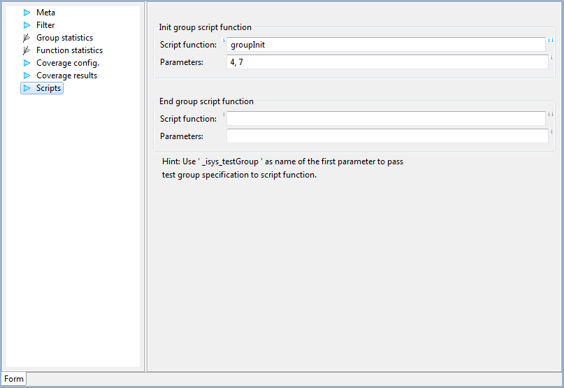

Scripts
In this section we can specify
names of functions to be called before or after test case
execution, and their parameters. The detailed description is given
in tool tips on the page.
Note: Init group scripts of all groups are executed before
test execution starts, and End Group scripts of all groups
are executed after all test cases are executed.

Rules for writing script functions are given in
Writing Script Extensions.